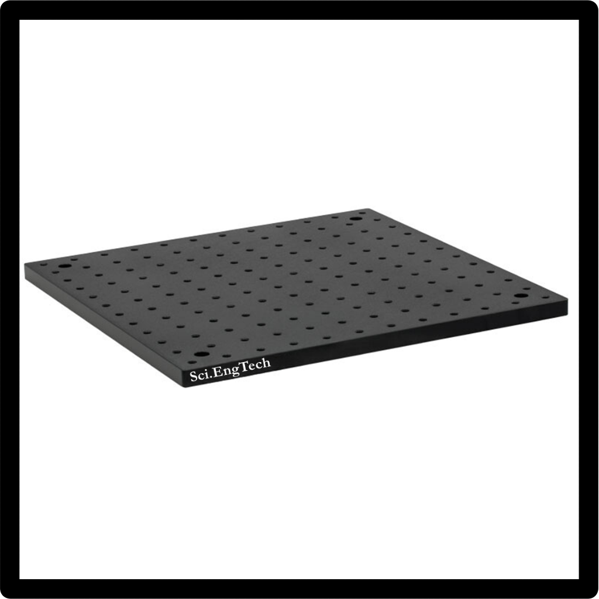
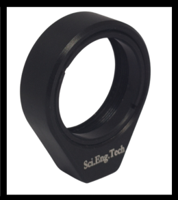
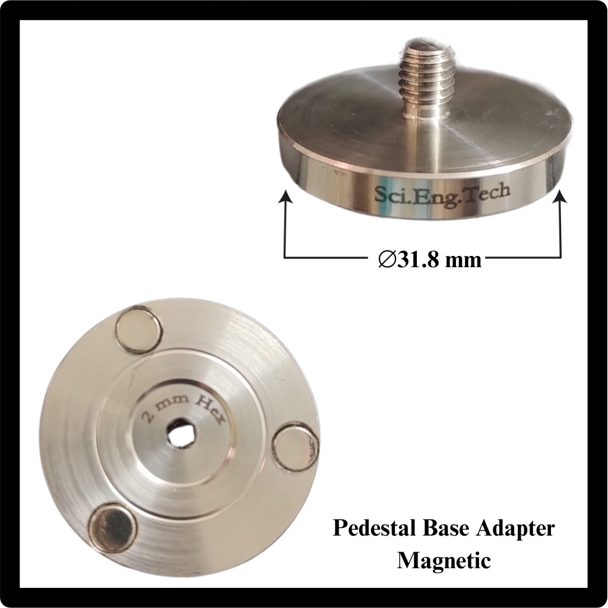
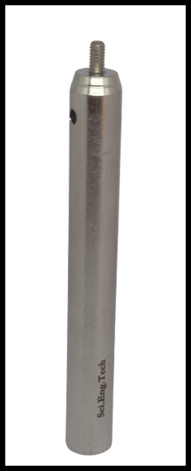
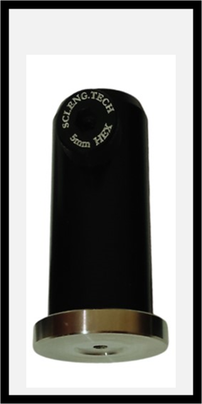
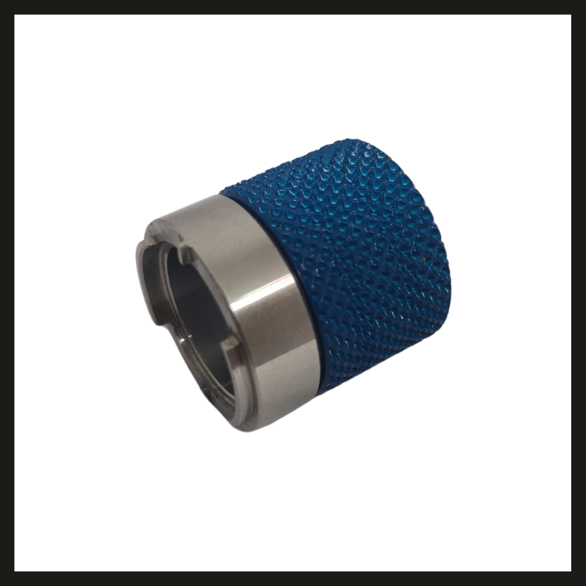
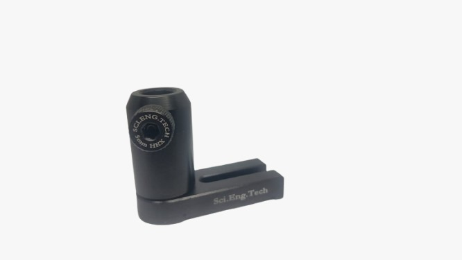

Opto-Mechanics
31 spec-verified components from the SciEngTech technical catalog. Request a quote for quantities and custom configurations.
Opto-Mechanics
30 mm Cage Plate
FEATURE: 30 mm Cage Plate | FEATURE: Double Bore for Ø1" Optics | FEATURE: Directly Mounts Optical Components Within a 30 mm Cage System Assembly SET-30MMCAGEPLAT
Opto-Mechanics
30 mm Cage System Alignment Plate
FEATURE: 30 mm Cage System Alignment Plate | FEATURE: Features | FEATURE: Used for alignment of visible laser beams in cage-based setups SET-CSAP
Opto-Mechanics
Adapter
FEATURE: Adapter | FEATURE: Key Features | STANDARD OUTER DIAMETER: Ø25.4 mm SET-ADAPTER
Opto-Mechanics
Aluminium/Laser Safety Screen (Beam Block Screen, Optical Safety Barrier, Optical safety screen)
FEATURE: Aluminium/Laser Safety Screen (Beam Block Screen, Optical Safety Barrier, Optical safety screen) | FEATURE: Applications | FEATURE: Laser and photonics laboratories SET-ALUMINIUMLAS
Opto-Mechanics
Angle Clamp (Rigid Assembly Clamps)
FEATURE: Angle Clamp (Rigid Assembly Clamps) | FEATURE: Features | FEATURE: Compatible with Ø12.7 mm (1/2") optical posts SET-ANGLECLAMPRI
Opto-Mechanics
BasePlate
FEATURE: BasePlate | FEATURE: Features | FEATURE: Precision-machined aluminium alloy construction SET-PB-H
Opto-Mechanics
BreadBoard(Optomechanical Platform, Optical Mounting Board, Precision Mounting Board)
FEATURE: BreadBoard(Optomechanical Platform, Optical Mounting Board, Precision Mounting Board) | FEATURE: Features | FEATURE: Precision M6 tapped metric hole grid for flexible component mounting SET-BREADBOARDOP
Opto-Mechanics
Cage Assembly Rod (Optical Cage Rod, Optomechanical cage rods,Cage connecting rods)
FEATURE: Cage Assembly Rod (Optical Cage Rod, Optomechanical cage rods,Cage connecting rods) | FEATURE: Overview | FEATURE: Key Features SET-CAGEASSEMBLY
Opto-Mechanics
Clamping Arm(Mounting Clamp Arm, Support Arm Clamp, Mechanical Clamping Arm, OptiClamp Arm)
FEATURE: Clamping Arm(Mounting Clamp Arm, Support Arm Clamp, Mechanical Clamping Arm, OptiClamp Arm) | FEATURE: Compact Flexure-Style Mount for Precision Optic Positioning | FEATURE: Key Features SET-CA-M4
Opto-Mechanics
Clamping Fork (Y-Clamp, Dual-Prong Clamp, Optic Capture Fork, Component Holding Fork)
FEATURE: Clamping Fork (Y-Clamp, Dual-Prong Clamp, Optic Capture Fork, Component Holding Fork) | FEATURE: Features | FEATURE: Precision-machined from high-quality stainless steel SET-CLAMPINGFORK
Opto-Mechanics
Collars
FEATURE: Collars | FEATURE: Features | FEATURE: Slip-on collar design for quick installation and adjustment SET-PC
Opto-Mechanics
Compact Variable Height Clamp
FEATURE: Compact Variable Height Clamp SET-CVHC
Opto-Mechanics
Cube Beamsplitter Mount (Optical Cube Mount, Beamsplitter Cube Holder ,Cube Optics Mount)
FEATURE: Cube Beamsplitter Mount (Optical Cube Mount, Beamsplitter Cube Holder ,Cube Optics Mount) | FEATURE: Features | FEATURE: Compatible with 25.4 mm (1") and 20.0 mm cube optics SET-CBM-25
Opto-Mechanics
Hex Locking Thumbscrew
FEATURE: Hex Locking Thumbscrew | MATERIAL: Anodized Aluminum | FEATURE: Designed and manufactured in India SET-HLS
Opto-Mechanics
Lens Mount Alignment Plate (Optical Axis Alignment Plate for Lens Mounts)
FEATURE: Lens Mount Alignment Plate (Optical Axis Alignment Plate for Lens Mounts) | FEATURE: Once alignment is completed, the plate can be removed without disturbing the setup. | FEATURE: Features SET-LMAP
Opto-Mechanics
Lens Mount(Lens Holder, Optical Lens Mount, Fixed Lens Holder, Lens Housing, OptiCell Lens Mount)
FEATURE: Lens Mount(Lens Holder, Optical Lens Mount, Fixed Lens Holder, Lens Housing, OptiCell Lens Mount) | FEATURE: Features | FEATURE: Accommodates optics up to 7 mm thickness SET-LMR-25
Opto-Mechanics
Lens Tube with retaining ring
FEATURE: Lens Tube with retaining ring | FEATURE: Overview | FEATURE: Features SET-SM1L05
Opto-Mechanics
Magnetic and Non-Magnetic Studded Base Adapter (Magnetic Post Adapter, Magnetic Interface Adapter,Magnetic Support Base, MagBas Adapter)
FEATURE: Applications | FEATURE: Optical and photonics laboratories | FEATURE: Laser alignment and beam delivery systems SET-MS-PBA-318
Opto-Mechanics
Magnetic Beam Height Ruler
FEATURE: Magnetic Beam Height Ruler | FEATURE: Its design allows easy use in optomechanical assemblies, making it an essential tool for alignment and diagnostics. | FEATURE: The base of the screen has SET-MBHR-6
Opto-Mechanics
Mountable Tool Kit
FEATURE: Mountable Tool Kit | FEATURE: Sr No | FEATURE: Balldrivers SET-TL-Kit
Opto-Mechanics
Optical Post(Optomechanical Support Post, Mounting Post, Optical Mounting Rod,Threaded Mounting Post)
FEATURE: Optical Post(Optomechanical Support Post, Mounting Post, Optical Mounting Rod,Threaded Mounting Post) | FEATURE: Features | FEATURE: Precision-machined stainless steel construction SET-OPTICALPOSTO
Opto-Mechanics
Pedestal Post Holder(Pedestal Post Mount,Fixed Height Post Mount, Rigid Post Pedestal)
FEATURE: Pedestal Post Holder(Pedestal Post Mount,Fixed Height Post Mount, Rigid Post Pedestal) | FEATURE: Features | FEATURE: Precision-machined from Aluminium Alloy 6061 SET-PEDESTALPOST
Opto-Mechanics
Post Collars
FEATURE: Post Collars | FEATURE: Features | FEATURE: Slip-on design for Ø12.7 mm (1/2") optical posts SET-PC
Opto-Mechanics
Post Holder(Adjustable Post Mount,Vertical Post Mount)
FEATURE: Post Holder(Adjustable Post Mount,Vertical Post Mount) | FEATURE: Features | FEATURE: Available in lengths from 20 mm to 150 mm SET-POSTHOLDERAD
Opto-Mechanics
Rubber Damping Feet
FEATURE: Rubber Damping Feet | FEATURE: Applications | FEATURE: Optical breadboards and workstations SET-RDF
Opto-Mechanics
Spanner Wrench(Optic Lock Ring Tool, Optic Adjustment Tool)
FEATURE: Spanner Wrench(Optic Lock Ring Tool, Optic Adjustment Tool) | FEATURE: Features | FEATURE: Suitable for lens tubes, lens mounts, rotation mounts, and other optomechanical components SET-SW-SM1
Opto-Mechanics
Swivel Base Adapter(Swivel Mounting Base)
FEATURE: Swivel Base Adapter(Swivel Mounting Base) | FEATURE: Key Advantages | FEATURE: Smooth, precise 360° rotational adjustment SET-SW-APT
Opto-Mechanics
Table Clamp “L” Shape
FEATURE: Table Clamp “L” Shape | FEATURE: This clamp can be used with optomechanical components with a thickness up to 0.50". SET-TABLECLAMPLS
Opto-Mechanics
Universal Base Plate
FEATURE: Universal Base Plate | FEATURE: Overview | FEATURE: Key Features SET-UNIVERSALBAS
Opto-Mechanics
Universal Post Holder
FEATURE: Universal Post Holder | FEATURE: Key Features | FEATURE: Mounts to Ø1/2" post holders via M6 cap screw SET-UNIVERSALPOS
Opto-Mechanics